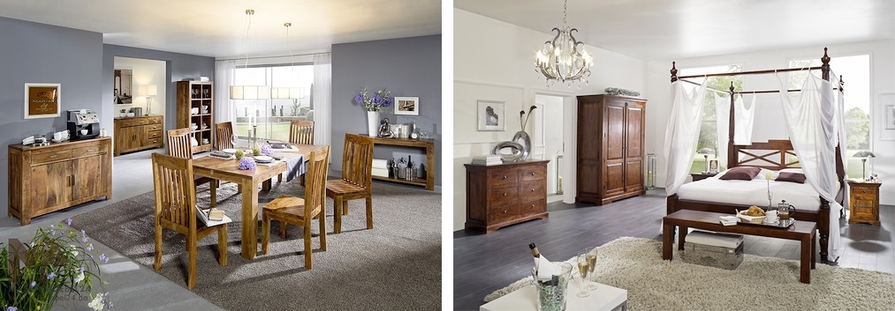
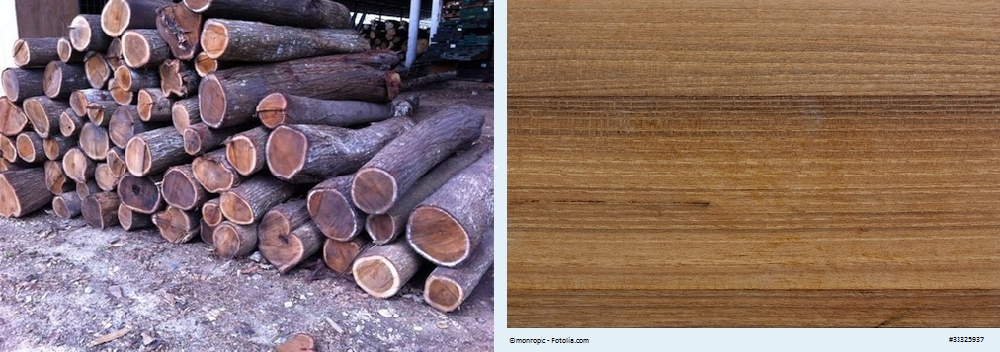
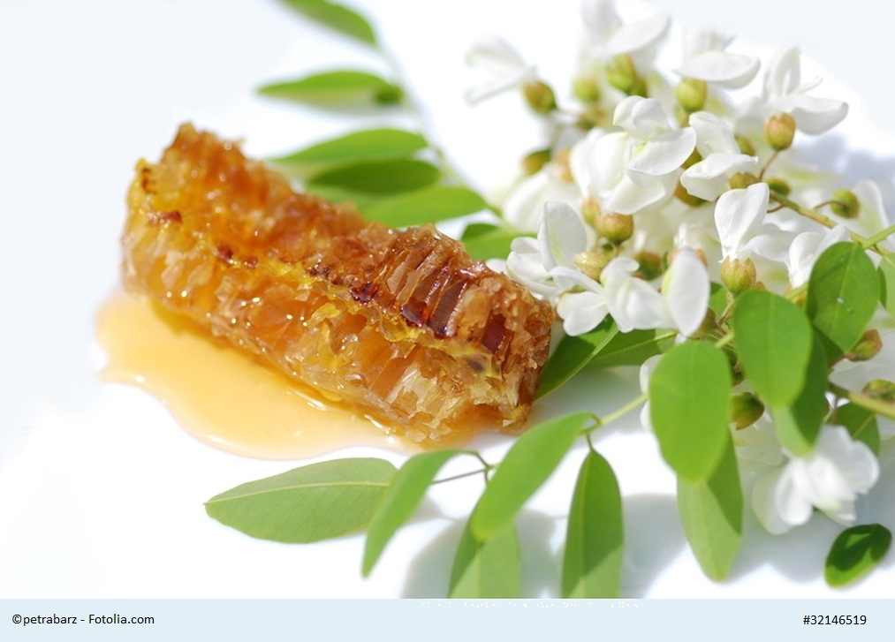

The all arround acacia
Why it's so popular? What makes it a good material for furniture? A few information about acacia tree and wood.
Some of our most popular solid furniture series - such as OXFORD or SHAMAN - are made from acacia wood. Enough reason to view this tree in more detail.
All information at a glance? Here you'll find interesting facts about the acacia - and great living ideas!
The acacia is a rather delicate tree that grows to about 8 m high. From a distance, the delicate leaves appear like clouds that have settled in the branches.
For our beautiful, high-quality solid furniture we use the Indian acacia, with the Latin name Acacia Nilotica or Penninervis. It's characterized by its robustness and grows not only in India but also in Asia and Africa.

The noble furniture wood is also popular in terms of care. You don't need any special agents, a dry cloth and, if necessary, a little washing-up liquid is usually sufficient - depending on how the furniture surface is finished.
The typical section has a beautiful color in warm tones of caramel, strong rust-red, and nuances of gray and silver.
But it's not just the wood that makes acacia so popular. For example, the rubber acacia (Acacia Senegal) supplies the desirable rubber juice, which, by the way, flows out by itself and solidifies. Then producers can easily remove the gum (Arabic) which not only supplies the domestic industries in Senegal but works as a primary product all over the world. People use it in food, medicine, art, and cosmetics for 4,000 years.
The Gerber acacia - as the name already suggests here - supplies tannins which stores mainly in its bark. Farmers peel it off in parts repeatedly at intervals of several years. After drying, the ground end product is mimosa bark. The origin of these species is in Australia, but they also grow very successfully in East Africa.
The Catechu acacia
It spans the range from East Africa to India and Burma. The useful tree grows perfectly in these areas and also has a source of tannin, the catechu, which you can find in acacia wood. When boiling together with tannins it thickens and hardens in the water.
Who knows, maybe there's a piece of furniture in your living room dyed with the stain of the Catechu acacia or the leather tanned with it.

You can find mentions about acacia even in the Bible: Moses probably knew about the excellent structural properties of the particularly hard and resistant wood as well as the sacred symbolism of the acacia as the tree of eternal life.
The burning bush also suggests an acacia bush, and its thorns were most probably Christ's crown during his Way of the Cross. Even today the acacia is a sacred tree in many cultures. In some parts of the world, people make holy water from the leaves of the acacia.
The acacia honey
The acacia tree hides a variety of treasures and we sweeten the end of this blog post with the well-known and loved acacia honey. The numerous, mostly whitish to yellowish flower gathers at the ends of the acacia branches give off a charming scent and attract bees that are busy producing honey.

The tree isn't so nice towards enemies - once attacked it warns the surrounding species and increasingly develops poison, the bitter tannins, which keep attackers away.
So dear friends of solid furniture, be good to the trees and appreciate and care for your valuable acacia wood furniture - they'll thank you with a wonderful living atmosphere and a long lifespan.